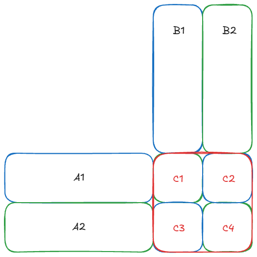
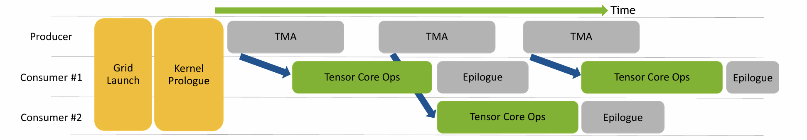

WGMMA
WGMMA（Warp-Group Matrix Multiply-Accumulate）是NVIDIA Hopper引入的Tensor Core指令族。它把参与一次矩阵乘加的协作单位从一个 Warp 扩展为一个 Warp Group。

我们先观察一条指令及其在 CuTe 中的封装：
1SM90_64x64x16_F16F16F16_SS
2wgmma.mma_async.sync.aligned.m64n64k16.f16.f16.f16
m64n64k16表示本条指令覆盖64x64x16的 MMA tile。SS表示 A、B 都通过 64-bit shared-memory descriptor 访问，直接从Shared Memory中取数。CuTe也封装了RS等形态，允许其中一个操作数来自寄存器。mma_async表示指令提交到异步队列，指令发射后即退休。sync.aligned仍然要求整个 128-thread warp group 在相同控制流位置、以相同参数发射指令。async不等于四个 Warp 可以各自独立调用。
WGMMA新特性主要在支持更大的矩阵形状、从 Shared Memory 直接读取操作数，以及异步发射和完成通知。
Warp Group 与更大的 Tile
Ampere 的 mma.sync 通常以一个 Warp 为协作单位，FP16 常见的单条指令形状是 m16n8k16。如果要计算更大的输出 tile，就需要排列很多条 MMA，并在指令之间安排寄存器搬运和同步。Hopper 的 WGMMA 由 128 个线程共同完成，一条指令可以覆盖 m64n64k16 到 m64n256k16 等更宽的输出形状，减少了指令和元数据开销。
更大的 tile 首先提高了数据复用。例如计算C1和C3的时候，小的Tile需要读取两次B1，而计算一个大Tile只需要读取一次。

其次，Dispatch Unit 不再需要频繁发射大量小 MMA。指令数量减少后，地址计算、谓词和流水线控制所占的发射带宽也随之下降。Ampere时代的MMA tile小，周期数少，所以就需要不断发射MMA以让Tensor Core保持运算。但是kernel内部计算地址搬运内存的指令同样需要发射，所以在Ampere上需要更精致的软件流水线(e.g. ping-pong buffer)以达到更好的性能。但wgmma一条指令可以计算数十倍于Ampere的MMA tile，这就减少了很多指令发射。同时wgmma一条指令会占用数十甚至上百个cycle，这使保持Tensor Core计算变得相对容易。
WGMMA 的异步完成模型也减少了计算阶段对线程级同步的依赖。Ampere时代的mma必须显式syncthreads以保证所有线程都不再需要SMEM里面的数据。wgmma得益于其WarpGroup的合作形态，其同步模型粒度更小，只需要WarpGroup与自身和ConsumerWarp的TMA进行同步，这减少了流水线空泡。
寄存器压力
大 tile 的代价是累加寄存器显著增加。对于 F32 accumulator，单个线程需要保存的 32-bit 寄存器数量为：
1D regs/thread = M * N / 128
因为一个 warp group 有 128 个线程，每个 F32 占用一个 32-bit 寄存器。以 m64n256k16 为例，64 * 64 / 128 = 128 个寄存器/线程。如果没有CuTe封装的话，手写PTX将难以处理如此多寄存器。
1struct MMA_64x256x16_F32F16F16_SS
2{
3 using DRegisters = void;
4 using ARegisters = uint64_t[1];
5 using BRegisters = uint64_t[1];
6 using CRegisters = float[128];
7
8 CUTE_HOST_DEVICE static void
9 fma(uint64_t const& desc_a,
10 uint64_t const& desc_b,
11 float & d000, float & d001, float & d002, float & d003,
12 ...
13 float & d124, float & d125, float & d126, float & d127,
14 GMMA::ScaleOut const scale_D = GMMA::ScaleOut::One)
15 {
16#if defined(CUTE_ARCH_MMA_SM90A_ENABLED)
17 cutlass::arch::synclog_emit_wgmma_smem_smem(__LINE__, desc_a, desc_b);
18 asm volatile(
19 "{\n"
20 ".reg .pred p;\n"
21 "setp.ne.b32 p, %130, 0;\n"
22 "wgmma.mma_async.sync.aligned.m64n256k16.f32.f16.f16 "
23 "{%0, %1, %2, %3, %4, %5, %6, %7, "
24 "..."
25 " %120, %121, %122, %123, %124, %125, %126, %127},"
26 " %128,"
27 " %129,"
28 " p, %131, %132, %133, %134;\n"
29 "}\n"
30 : "+f"(d000), "+f"(d001), "+f"(d002), "+f"(d003),
31 ...
32 "+f"(d124), "+f"(d125), "+f"(d126), "+f"(d127)
33 : "l"(desc_a),
34 "l"(desc_b),
35 "r"(int32_t(scale_D)), "n"(int32_t(scaleA)), "n"(int32_t(scaleB)), "n"(int32_t(tnspA)), "n"(int32_t(tnspB)));
36#endif
37 }
38};
| Shape | D regs/thread | 占 thread 寄存器上限 (255) 比例 |
|---|---|---|
| m64n64k16 | 32 | 13% |
| m64n128k16 | 64 | 25% |
| m64n192k16 | 96 | 38% |
| m64n256k16 | 128 | 50% |
这还没有计算地址、TMA 坐标、临时向量和 epilogue 所需的寄存器。FA3 一类 attention kernel 还要保存 P、logits、LSE 等中间状态，通常选择 m64n64 或 m64n128。GEMM 的中间状态较少，才有空间使用更宽的 N tile。
Warp Specialize 与 Warp Group
我们在介绍TMA的时候也简单提到了Warp Specialize这一新编程范式，现在详细讲一下一个CTA中角色到底是如何分配的。
TMA 只需一个线程发射指令，而 WGMMA 必须由 4 个 Warp 同时发射。ConsumerWarp和ProducerWarp需要的硬件资源明显是不对等的。虽然 160 线程（1 个 TMA Warp + 1 个 WGMMA WG）可行，但在真实的深度学习算子中，最推荐的BlockSize依然是 128、256、384、512等128的整数倍。SM内部的4个Sub-SM是对称划分的，按128线程对齐能让 SM 在调度、SMEM 分配上达到最佳硬件效率。

在 CUTLASS 的 SM90 warp-specialized GEMM 中，CTA中的384线程会划分为 Producer（负责 TMA、SMEM stage 管理和地址计算）、Consumer（组成一个或多个 warp group，负责 WGMMA 和 accumulator），以及可选的 Epilogue 角色：
1enum class WarpGroupRole {
2 Producer = 0,
3 Consumer0 = 1,
4 Consumer1 = 2
5};
6
7enum class ProducerWarpRole {
8 Mainloop = 0,
9 Warp1 = 1,
10 Epilogue = 2,
11 MainloopAux = 3
12};
可以看到，这个kernel为ProducerWarp分配了一整个WarpGroup，ProducerWarp内部又进行了细分，这就避免了TMA单独占用过多空转线程。
Shared Memory Operand
WGMMA 可以直接从 SMEM 读取矩阵操作数，避免先把完整 A/B tile 搬进寄存器。PTX 操作数是一个编码了 SMEM 起始地址、leading dimension、stride 和 swizzle 的 64-bit descriptor。descriptor 描述了A/B矩阵视图。
shared memory descriptor 字段在CuTe中的封装如下
1// Bitfield implementation avoids the need for shifts in assignment
2struct {
3 // start_address, bit [0,14), 4LSB not included
4 uint16_t start_address_ : 14, : 2; // 14 bits [0,14), 2 bits unused
5 // leading dimension byte offset, bit [16,30), 4LSB not included
6 // For N: This is the stride from the first col to the second col of the 8x2 brick in INTERLEAVED
7 // Unused for all SWIZZLE_* layouts (and assumed to be 1)
8 // For T: This is the stride from the first 8 rows to the next 8 rows.
9 uint16_t leading_byte_offset_ : 14, : 2; // 14 bits [0,14), 2 bits unused
10 // stride dimension byte offset, bit [32,46), 4LSB not included
11 // For N: This is the stride from the first 8 rows to the next 8 rows.
12 // For T: This is the stride fro mthe first 8 cols to the next 8 cols.
13 uint16_t stride_byte_offset_ : 14, : 2; // 14 bits [0,14), 2 bits unused
14 // base_offset, bit [49,52)
15 // Valid only for SWIZZLE_128B and SWIZZLE_64B
16 uint8_t : 1, base_offset_ : 3, : 4; // 1 bit unused, 3 bits [1,4), 4 bits unused
17 // layout type, bit [62,64)
18 // SWIZZLE_NONE = 0, SWIZZLE_32B = 3, SWIZZLE_64B = 2, SWIZZLE_128B = 1
19 uint8_t : 6, layout_type_ : 2; // 6 bits unused, 2 bits [6,8)
20} bitfield;
这里使用的swizzle和TMA的硬件swizzle是对应的，CuTe将矩阵的元信息封装进了模板。
1TiledMMA tiled_mma = make_tiled_mma(SM90_64x64x16_F16F16F16_SS<GMMA::Major::MN,GMMA::Major::MN>{});
而swizzle信息来自于TMA
1auto sA = tile_to_shape(GMMA::Layout_MN_SW128_Atom<TA>{}, make_shape(bM,bK,bP));
2auto sB = tile_to_shape(GMMA::Layout_MN_SW128_Atom<TB>{}, make_shape(bN,bK,bP));
3Copy_Atom tmaA = make_tma_atom(SM90_TMA_LOAD{}, mA, sA(_,_,0), make_shape(bM,bK));
4Copy_Atom tmaB = make_tma_atom(SM90_TMA_LOAD{}, mB, sB(_,_,0), make_shape(bN,bK));
Async Pipeline
WGMMA是一条异步MMA指令，异步语义意味着指令退休不代表D寄存器可读。和Ampere类似，Hopper wgmma也有commit_group和wait_group两条同步指令，但其仅对当前WarpGroup可见，而且仅对MMA有效，Ampere的主要是做cp.async的内存操作同步。在ConsumerWarp内部，为了掩盖Tensor Core的计算延迟，通常会连续发射2-4个WGMMA指令填充pipeline，这些wgmma之间的同步就要依靠前文两条同步指令。CuTe为我们提供了如下的封装
1// Wait until N batch on the fly
2template <int N>
3CUTE_HOST_DEVICE
4void
5warpgroup_wait()
6{
7 static_assert(N >= 0 && N <= 7, "WGMMA wait: N must be in range [0, 7]");
8#if defined(CUTE_ARCH_MMA_SM90A_ENABLED)
9 cutlass::arch::synclog_emit_warpgroup_wait(__LINE__, N);
10 asm volatile("wgmma.wait_group.sync.aligned %0;\n" :: "n"(N) : "memory");
11#endif
12}
13
14// Marks the commit point for one or more sized batch of warpgroup MMAs.
15CUTE_HOST_DEVICE
16void
17warpgroup_commit_batch()
18{
19#if defined(CUTE_ARCH_MMA_SM90A_ENABLED)
20 cutlass::arch::synclog_emit_warpgroup_commit_batch(__LINE__);
21 asm volatile("wgmma.commit_group.sync.aligned;\n" ::: "memory");
22#endif
23}
Generic Proxy 与 Async Proxy
Hopper 将普通 CUDA 执行路径和异步引擎视为不同的 proxy。Generic proxy 包括 CUDA Core 的 ALU、普通 ld/st、LDS/STS 等；async proxy 包括 TMA、WGMMA 和 mbarrier 相关操作。两个 proxy 各自维护顺序，因此跨 proxy 访问同一地址时不能依赖代码顺序来推断可见性。
其中，TMA 写入完成由 mbarrier 的 transaction count 同步，WGMMA 计算完成则由 async group 表示。两者在Hopper上面的同步路径不同意，但这个问题在Blackwell上得到了解决，此为后话。
Warp Up
我们在GPU的架构演进中看到了前所未有的异步性（Attack of the asynchronous machines），Turing上一切都是同步的，Ampere引入了异步搬运cp.async，Hopper又引入了TMA和WGMMA，至此数据搬运和计算全部都是异步的。异步当然带来了极大的性能提升，但其对程序员编程的心智模型也带来了巨大冲击。随着GPU计算性能的飞跃，为了充分释放 Tensor Core 的峰值算力，开发者必须构建极其精致且复杂的软件流水线。这使得现代 Kernel 开发超越了传统 BLAS 时代的算法实现逻辑，转向高效算法、异步系统与体系结构三位一体的工程范式。
在下一篇博客当中我们会使用CuTe写Hopper上面的使用Warp Specialised的GEMM kernel。